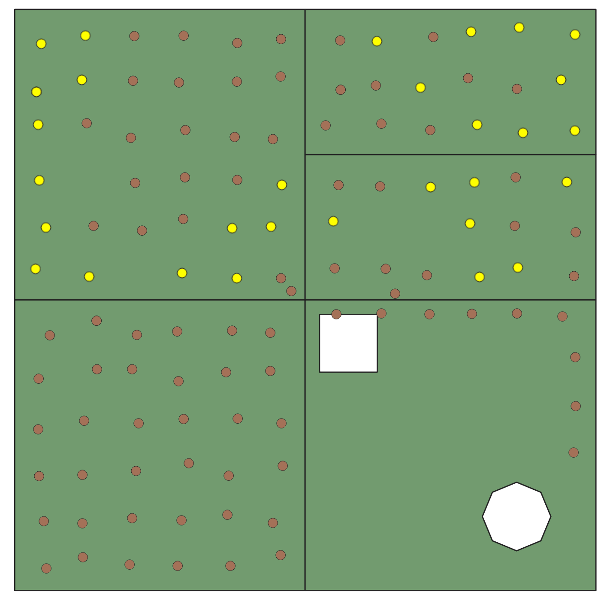
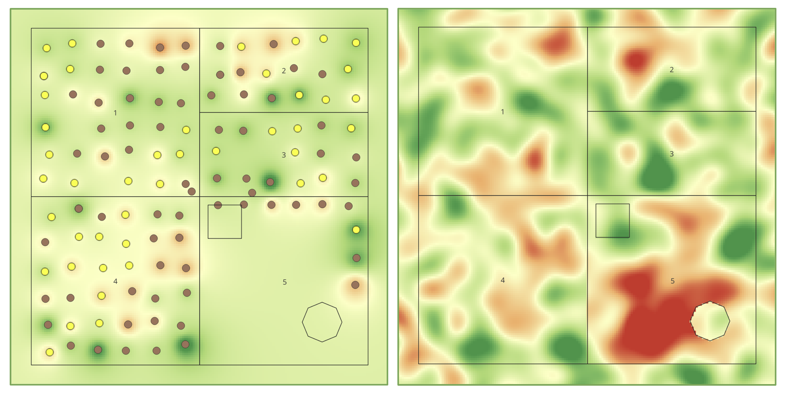
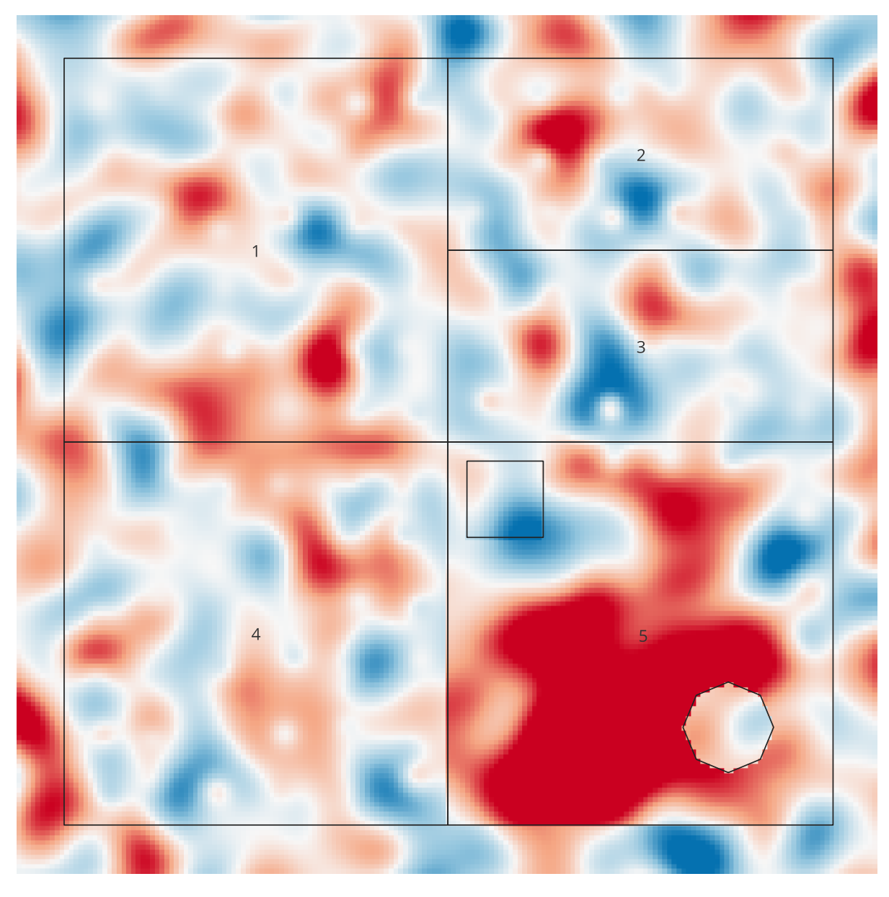

Lab 05 · November 2026
Entry 5: Usable Soil on a Field
The question
At an old farm, how much soil is usable for growing alfalfa and corn?
The data
Files: LAB05_simplified_farm.gpkg LAB05_truth-p.tif
Source: Class Brightspace page files, Coordinate Reference System for both is EPSG:32614, Retrieved on 11/09/2026
The farm is synthetic, and the original attributes sampling table contained two different scales of P. This was fixed by inputting the expression:
“CASE WHEN "batch" = 'B' THEN "P" / 100 ELSE "P" END”.
The method
Sample points satisfying agricultural criteria to grow crops were filtered in yellow by the expression:
“"pH" >= 6 AND "pH" <= 7 AND "P_fix" >= 0.25 AND "P_fix" <= 0.80 AND "K" >= 1.8 AND "K" <= 2.9”
Map was created to fill in gaps using Inverse Distance Weighting (IDW). IDW Interpolation was run on Extent 435000,436800,4516000,4517800 [EPSG:32614], with 10m cell size, and distance coefficient p=1,2,4.
The true phosphorus values were overlaid on the map, and Error was shown on a map, calculated by expression:
“"idw_p2@1" - "LAB05_truth-p@1"”



What I found
I would recommend to the farmer to not grow crops in Field 5, due to the uncertainty of the map of soil quality. Although the interpolated map shows that only around 0.2 acres are below the required phosphorus amount, the reality is that there could be a much greater area that is unfit for use. We are unsure because the algorithm (inverse distance weighting) to create the map relies on the distance between an empty field and a nearby sample point. Only in Field 5, the southwest corners are entirely too far away from the nearest known value, which are concentrated in the top and half of the right edge of the field. If conditions in that blank area were not suitable to grow crops, we would not be able to tell due to the estimation of these values as just the averages of the known sample values. On the truth map, it really ended up being around 60 acres of unfit soil, rather than the 0.2 acres from the interpolated map.
This issue goes to clinical and healthcare accessibility as well. Using an inverse distance weighting algorithm with spread apart and sparse points results in whole blank areas becoming either unrepresented or falsely represented. When sampling people, it is important to have an even spread to create an interpolation map that best represents the whole population and area. If not, the city would end up only building clinics or allocating resources to known points, while the people in unrepresented areas would have no access to critical care.
What this does not show
Due to the sampling inconsistencies in Field 5, empty points are at much farther distances from known values compared to the more regular spacing in Fields 1-4. Based on the inverse distance weighting algorithm, these empty points are estimated using surrounding points, which are only known as the dots on the very side. In reality, the soil was completely depleted, but based on the map alone we cannot tell.
AI use: No AI tools were used for this entry.